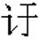
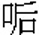

曼雪
徐

[167]先生在《人间世》上，发表了这样的题目的论。对于此道，我没有那么深造，但“愚者千虑，必有一得”[168]，所以想来补一点，自然，浅薄是浅薄得多了。“……”是洋货，五四运动之后这才输入的。先前林琴南先生译小说时，夹注着“此语未完”的，便是这东西的翻译。在洋书上，普通用六点，吝啬的却只用三点。然而中国是“地大物博”的，同化之际，就渐渐的长起来，九点，十二点，以至几十点；有一种大作家，则简直至少点上三四行，以见其中的奥义，无穷无尽，实在不可以言语形容。读者也大抵这样想，有敢说觉不出其中的奥义的罢，那便是低能儿。
然而归根结蒂，也好像终于是安徒生[169]童话里的“皇帝的新衣”，其实是一无所有；不过须是孩子，才会照实的大声说出来。孩子不会看文学家的“创作”，于是在中国就没有人来道破。但天气是要冷的，光着身子不能整年在路上走，到底也得躲进宫里去，连点几行的妙文，近来也不大看见了。
“□□”是国货，《穆天子传》[170]上就有这玩意儿，先生教我说：是阙文。这阙文也闹过事，曾有人说“口生垢，口戕口”[171]的三个口字，也是阙文，又给谁大骂了一顿。不过先前是只见于古人的著作里的，无法可补，现在却见于今人的著作上了，欲补不能。到目前，则渐有代以“××”的趋势。这是从日本输入的。这东西多，对于这著作的内容，我们便预觉其激烈。但是，其实有时也并不然。胡乱×它几行，印了出来，固可使读者佩服作家之激烈，恨检查员之峻严，但送检之际，却又可使检查员爱他的顺从，许多话都不敢说，只×得这么起劲。一举两得，比点它几行更加巧妙了。中国正在排日，这一条锦囊妙计，或者不至于模仿的罢。
现在是什么东西都要用钱买，自然也就都可以卖钱。但连“没有东西”也可以卖钱，却未免有些出乎意表。不过，知道了这事以后，便明白造谣为业，在现在也还要算是“货真价实，童叟无欺”的生活了。
五月二十四日。
注 释
[166] 本篇最初发表于1934年5月26日《申报·自由谈》。
[167] 徐（1908—1980） 浙江慈溪人，作家。当时在上海编辑《人间世》、《论语》等刊物。他的《“……”“□□□□”论》一文，发表于1934年5月20日《人间世》第四期。
[168] “愚者千虑，必有一得” 参看本卷第293页注〔5〕。
[169] 安徒生（H.C.Andersen，1805—1875） 丹麦童话作家。《皇帝的新衣》是其名作之一，取材于西班牙民间故事，说有两个骗子，自称用他们织成的最美丽的布缝制的衣服，“任何不称职或愚蠢的人都看不见”。他们其实没有这种“布”，却欺骗皇帝，让他脱下衣服，假装给他穿上这种不存在的“新衣”。皇帝及周围臣民怕别人说自己不称职或愚蠢，都不敢说出真相。最后，一个小孩子天真地说穿了：“可是他什么衣服也没有呀！”
[170] 《穆天子传》 晋代从战国时魏襄王墓中发现的先秦古书之一，共六卷。原本是竹简，后因竹简文字剥落，从竹简古文改写楷书时有难辨之处，用□号代替缺文，所以书中多□，如卷二：“仍献白玉□只角之一□三，可以□沐，乃进食□酒姑劓九□。”
[171] “口生垢，口戕口” 《大戴礼记·武王践阼》中的句子。“垢”当作“

”。《大戴礼记》北周卢辩注：“，耻也。”清代周元亮、钱尔弢都说这几个“口”：“乃古方空圈，盖缺文也；今作口字解，大误。”清代经学家王应奎持不同看法，在《柳南随笔》卷一中说：“近予见宋板《大戴礼》，乃秦景旸阅本，口字并非方空圈。景旸讳四麟，系前代邑中藏书家，校订颇精审可据，冯嗣宗《先贤事略》中称之。观此，则周、钱两公之言殆非也。”